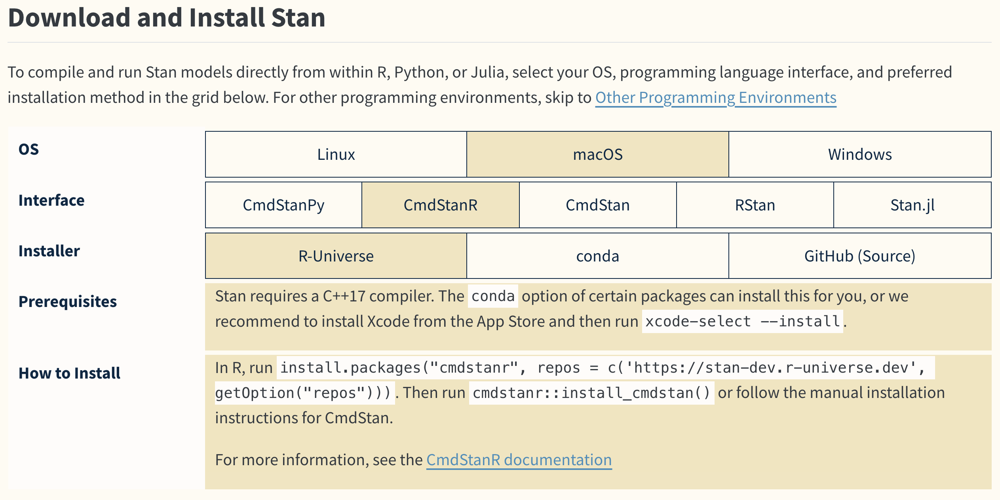
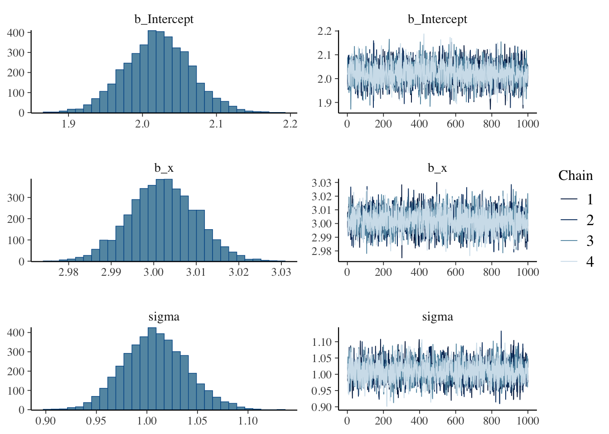
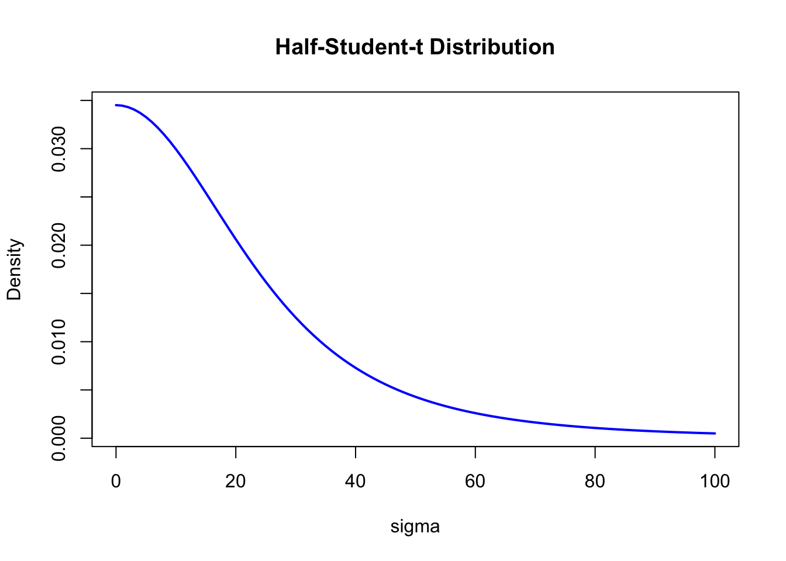

install.packages("brms")12 Bayesian Statistics in Practice
So far we have practised psychological statistics in R using the classical (frequentist) toolkit. We now introduce Bayesian statistics. The reason for the deliberate framing is that Bayesian statistics — though one species of inferential statistics — has accumulated, through its long history and contested interpretations, a thicket of misunderstandings. By some accounts there are over a hundred Bayesian “schools” of interpretation, and conversations on the topic can be fraught.
The author considers himself a “fashion Bayesian” and is not enthusiastic about ideological fights. With that context as a kind of prior, please read what follows.
12.1 Where Bayesian statistics sits
The Bayesian lineage is old. Bayes’s theorem itself is nearly 300 years old: Thomas Bayes was an 18th-century clergyman who died in 1763. That his name now adorns an entire field reflects how thoroughly the Bayesian view changes the conceptual and interpretive framework relative to the classical statistics we have been working with.
Bayesian statistics also has a curious history of being more theoretical than applied for most of its existence; in the author’s reading, only since around 2010 has Bayesian methodology spread rapidly in applications. The long latency is owed to several factors: the limited range of situations in which Bayesian methods could be applied; the fact that wartime applications kept much of the work classified; and — as McGrayne writes — the personal animosity of senior figures in American statistics toward Bayesian methods, which sounds like a joke but evidently was not. See (シャロン・バーチュ・マグレイン [2011] 2018) for that history.
Two factors have driven the recent revival. First, the replication crisis in social psychology motivated a search for new statistical approaches outside the classical framework. Second, advances in computing have produced extraordinarily powerful estimation methods, vastly expanding the modelling flexibility on offer.
Bayesian statistics as a response to the replication crisis tends to contrast itself with “frequentist” classical statistics, sharpening the rhetorical edges. But moving to Bayesian methods because the classical methods are misused only changes which methods get misused; it does not fix the underlying problem.
From a pedagogical standpoint, the author finds Bayesian statistics gentler and easier for novices to grasp than the classical methods. But the century-long accumulation of frequentist research in psychology — for all its potential for misuse — has produced a rich pedagogical literature and a deep analytic toolbox. Given that the field’s literature is essentially all frequentist, abandoning it wholesale and converting to Bayes is not a realistic move. Weak points of Bayesian statistics are precisely those: the pedagogical content, the analytic tools, and the population of teachers familiar with Bayesian statistics are all still relatively thin. Closing those gaps in the near term is to be hoped for.
The second factor gives reason for optimism about Bayes’s future. As statistical models grow more complex, maximum likelihood estimation runs into practical walls; Bayesian estimation can keep going. This is largely thanks to MCMC, the computational engine that delivers Bayesian power. Bayesian methods let researchers build statistical models that flexibly fit the data at hand, and compare models on a unified scale via Bayes factors — clear strengths. The cost, however, is that the researcher must take on something of the role of programmer. Psychologists generally want statistics as a tool; they are not eager to invest effort in software engineering. Yet the appeal of free-form modelling — unconstrained by the strictures of mean-difference tests and factorial designs — is real, and the number of psychologists taking the modelling route grows each year.
12.2 MCMC
We turn to MCMC, the technical innovation that made Bayesian inference broadly applicable. First, a quick refresher on Bayes’s theorem.
12.2.1 Bayes’s theorem
Bayes’s theorem is a statement about conditional probability. With \(P(B \mid A)\) denoting “the probability that \(B\) occurs given that \(A\) occurred,”
\[ P(B \mid A) = \frac{P(A \mid B)\, P(B)}{P(A)}. \]
Here \(P(A)\) is the probability of \(A\), \(P(B)\) of \(B\), \(P(A \mid B)\) the probability of \(A\) given \(B\), and \(P(B \mid A)\) the probability of \(B\) given \(A\). The key feature is that the conditioning is reversed between the two sides.
The theorem expresses \(P(B \mid A)\) in terms of \(P(A \mid B)\), \(P(B)\), and \(P(A)\). Now identify \(A\) with the data and \(B\) with the model parameters:
\[ P(\theta \mid D) = \frac{P(D \mid \theta)\, P(\theta)}{P(D)}. \]
The left side is the probability of the parameters given the data — the very target of inferential statistics. On the right, \(P(D \mid \theta)\) is the probability of the data given the parameters, and \(P(\theta)\) is the probability of the parameters. For a fixed dataset, \(P(D \mid \theta)\) as a function of \(\theta\) is the likelihood. The factor \(P(\theta)\) is the prior probability (or prior distribution), and its presence is one of the most distinctive features of Bayesian statistics.
Before any data, the unknown parameters have some uncertainty; the prior expresses that uncertainty. Multiplying the prior by the likelihood (and dividing by the marginal likelihood \(P(D)\)) yields the posterior probability, \(P(\theta \mid D)\) — the result of statistical inference.
Classical statistics has long criticised the practice of stipulating a parameter’s plausibility before seeing the data as scientifically unsound. Setting that aside, look at the formula again: the posterior is the likelihood multiplied by the ratio of prior to marginal likelihood. Maximum likelihood estimation picks the value of \(\theta\) at which the likelihood is highest; Bayesian estimation extends that, multiplying the likelihood by the prior/evidence ratio so that the distribution of \(\theta\) — not just its peak — becomes available. Likelihood alone is not a probability distribution, so only its peak is usable as an estimate; once Bayes’s theorem has done its work, however, we get a full probability distribution, and we can quantitatively describe the plausible region for \(\theta\).
12.2.2 A brief history of practical Bayes
In Bayesian statistics, anything unknown is expressed as a probability. Psychological statistics is typically aimed at estimating means and differences between means — quantities that are unknown before the data are collected — so writing them as probability distributions is the first step.
Bayesian statistics reduces to two steps repeated: “express unknown parameters as a probability distribution (the prior)” and “update the prior to a posterior using the data.” The prior is chosen to suit the situation. Suppose we want the average height difference between men and women. The two population means are unknown, but height is a length and refers to humans: even pessimistically, 100 cm to 300 cm bounds the plausible range. A broad normal prior with a peak somewhere in that range (say, mean 100, SD 10) is perfectly serviceable.
Suppose now that the likelihood — the data-generating mechanism — is also normal. With the prior and likelihood both normal, the numerator on the right-hand side is a product of normals, and the posterior is again normal in shape.
When the posterior is analytically tractable in this way, Bayesian inference proceeds as straightforwardly as classical inference. The trouble is that it is not always tractable: as models grow more complex, the right-hand side becomes a tangle of probability distributions, and the posterior has no closed form.
Historically, Bayesian statistics largely revolved around picking distributions whose product yielded a tractable posterior. The constraint felt severe, and Bayesian methods were largely a paper exercise for that reason.
As computing matured, methods were devised to find the peak of even an analytically intractable posterior: vary the parameters in small steps so that the posterior density increases — i.e., a grid search over the parameter space. Grid search is computationally expensive but feasible with effort, and Bayes became somewhat more usable.
The technique that turned Bayes from “usable with effort” into “usable for everyday work” is MCMC.
12.2.3 Markov chain Monte Carlo
MCMC stands for Markov chain Monte Carlo, combining two techniques. A Markov chain is a stochastic-process model; Monte Carlo refers to sampling from a probability distribution by simulation. In a nutshell, the Markov chain lets us construct, computationally, a probability distribution of essentially any shape, and Monte Carlo lets us draw random samples from it.
The relationship between probability distributions and random numbers is familiar by now: a single draw is just one possible realisation, but enough of them together trace out the shape of the distribution. Even if the posterior has no closed form, we can generate draws from it; collect enough of them, plot a histogram, and the silhouette of the histogram approximates the posterior.
The first benefit of this approach is that probability calculations become tabulation problems. Modern hardware can summarise thousands or tens of thousands of values in an instant; computing the average of thousands of draws of a parameter is trivial. That average approximates the posterior expectation. The approximation’s accuracy depends on the MCMC sample size, but a tenfold increase in sample size yields roughly a tenfold gain in precision; throwing more draws at the problem is the easy fix.
The second benefit is that integration becomes easy. A multi-parameter posterior is a probability distribution on a multidimensional space. Focusing on one parameter requires integrating out the others — a multiple integral, painful in closed form. With MCMC, one simply tabulates the draws on the parameter of interest and ignores the rest.
Approximation, certainly, but a powerful approximation: provided the prior and likelihood are appropriately specified, MCMC produces draws from the posterior even when the posterior has no closed form. The specification is expressed in a probabilistic programming language. In such a language one only writes down the prior and the likelihood (i.e., from which distribution the data came); MCMC then delivers draws from the posterior. The expressive power available to the user — choosing any combinations of distributions — is enormously expanded.
The two leading probabilistic programming languages have been JAGS and Stan. Stan is now the standard. Stan can be driven from R, Python, and other languages. The recommended R interface to Stan is the cmdstanr package; see the cmdstanr documentation for installation.
12.3 Tools: Stan and brms
Stan installation varies a little by platform; consult the official site. As of March 2025, the front page links to Get Started, which shows the requirements and instructions after you select an OS, interface, and installer.

The screenshot shows macOS; use whatever matches your environment. Choose CmdStanR as the interface. Stan needs a C++ compiler; CmdStanR runs Stan from the command line and connects the results back to R. After running cmdstanr::install_cmdstan() you set the installation path.
CmdStanR runs Stan models written in the Stan language, builds the posterior inside the machine, and returns its representative samples (MCMC draws). It offers high flexibility because you write the model yourself; for linear models, however, the brms package (from the same team behind Stan) is far more convenient.
With brms, R’s formula interface specifies a generalised linear mixed model, hierarchical linear model, and so on. The syntax matches the (non-Bayesian) lmer package, which makes it easy to adopt. brms installs from CRAN; see the brms site.
Assuming the environment is set up, we proceed.
12.4 Examples with Bayesian estimation
12.4.1 Parameter recovery and reading the output
Following the previous chapter, generate data from a regression model and recover the parameters by fitting.
A uniformly distributed predictor with normal residuals of SD \(\sigma\):
pacman::p_load(tidyverse)
set.seed(123)
n <- 500
beta0 <- 2
beta1 <- 3
sigma <- 1
# generate data
x <- runif(n, -10, 10)
e <- rnorm(n, 0, sigma)
y <- beta0 + beta1 * x + e
dat <- data.frame(x, y)
result.lm <- lm(y ~ x, data = dat)
summary(result.lm)
Call:
lm(formula = y ~ x, data = dat)
Residuals:
Min 1Q Median 3Q Max
-2.82796 -0.61831 0.03553 0.69367 2.68062
Coefficients:
Estimate Std. Error t value Pr(>|t|)
(Intercept) 2.021928 0.045010 44.92 <2e-16 ***
x 3.002194 0.007919 379.09 <2e-16 ***
---
Signif. codes: 0 '***' 0.001 '**' 0.01 '*' 0.05 '.' 0.1 ' ' 1
Residual standard error: 1.006 on 498 degrees of freedom
Multiple R-squared: 0.9965, Adjusted R-squared: 0.9965
F-statistic: 1.437e+05 on 1 and 498 DF, p-value: < 2.2e-16The fit recovers the intercept 2.0219277 and slope 3.0021943, matching the simulated \(\beta_0 = 2\) and \(\beta_1 = 3\).
That was maximum likelihood. Now fit it Bayesianly with brms:
pacman::p_load(brms)
# pin brms's backend to cmdstanr (avoiding rstan)
options(brms.backend = "cmdstanr")
result.bayes <- brm(y ~ x, data = dat)Start samplingRunning MCMC with 4 sequential chains...
Chain 1 Iteration: 1 / 2000 [ 0%] (Warmup)
Chain 1 Iteration: 100 / 2000 [ 5%] (Warmup)
Chain 1 Iteration: 200 / 2000 [ 10%] (Warmup)
Chain 1 Iteration: 300 / 2000 [ 15%] (Warmup)
Chain 1 Iteration: 400 / 2000 [ 20%] (Warmup)
Chain 1 Iteration: 500 / 2000 [ 25%] (Warmup)
Chain 1 Iteration: 600 / 2000 [ 30%] (Warmup)
Chain 1 Iteration: 700 / 2000 [ 35%] (Warmup)
Chain 1 Iteration: 800 / 2000 [ 40%] (Warmup)
Chain 1 Iteration: 900 / 2000 [ 45%] (Warmup)
Chain 1 Iteration: 1000 / 2000 [ 50%] (Warmup)
Chain 1 Iteration: 1001 / 2000 [ 50%] (Sampling)
Chain 1 Iteration: 1100 / 2000 [ 55%] (Sampling)
Chain 1 Iteration: 1200 / 2000 [ 60%] (Sampling)
Chain 1 Iteration: 1300 / 2000 [ 65%] (Sampling)
Chain 1 Iteration: 1400 / 2000 [ 70%] (Sampling)
Chain 1 Iteration: 1500 / 2000 [ 75%] (Sampling)
Chain 1 Iteration: 1600 / 2000 [ 80%] (Sampling)
Chain 1 Iteration: 1700 / 2000 [ 85%] (Sampling)
Chain 1 Iteration: 1800 / 2000 [ 90%] (Sampling)
Chain 1 Iteration: 1900 / 2000 [ 95%] (Sampling)
Chain 1 Iteration: 2000 / 2000 [100%] (Sampling)
Chain 1 finished in 0.0 seconds.
Chain 2 Iteration: 1 / 2000 [ 0%] (Warmup)
Chain 2 Iteration: 100 / 2000 [ 5%] (Warmup)
Chain 2 Iteration: 200 / 2000 [ 10%] (Warmup)
Chain 2 Iteration: 300 / 2000 [ 15%] (Warmup)
Chain 2 Iteration: 400 / 2000 [ 20%] (Warmup)
Chain 2 Iteration: 500 / 2000 [ 25%] (Warmup)
Chain 2 Iteration: 600 / 2000 [ 30%] (Warmup)
Chain 2 Iteration: 700 / 2000 [ 35%] (Warmup)
Chain 2 Iteration: 800 / 2000 [ 40%] (Warmup)
Chain 2 Iteration: 900 / 2000 [ 45%] (Warmup)
Chain 2 Iteration: 1000 / 2000 [ 50%] (Warmup)
Chain 2 Iteration: 1001 / 2000 [ 50%] (Sampling)
Chain 2 Iteration: 1100 / 2000 [ 55%] (Sampling)
Chain 2 Iteration: 1200 / 2000 [ 60%] (Sampling)
Chain 2 Iteration: 1300 / 2000 [ 65%] (Sampling)
Chain 2 Iteration: 1400 / 2000 [ 70%] (Sampling)
Chain 2 Iteration: 1500 / 2000 [ 75%] (Sampling)
Chain 2 Iteration: 1600 / 2000 [ 80%] (Sampling)
Chain 2 Iteration: 1700 / 2000 [ 85%] (Sampling)
Chain 2 Iteration: 1800 / 2000 [ 90%] (Sampling)
Chain 2 Iteration: 1900 / 2000 [ 95%] (Sampling)
Chain 2 Iteration: 2000 / 2000 [100%] (Sampling)
Chain 2 finished in 0.0 seconds.
Chain 3 Iteration: 1 / 2000 [ 0%] (Warmup)
Chain 3 Iteration: 100 / 2000 [ 5%] (Warmup)
Chain 3 Iteration: 200 / 2000 [ 10%] (Warmup)
Chain 3 Iteration: 300 / 2000 [ 15%] (Warmup)
Chain 3 Iteration: 400 / 2000 [ 20%] (Warmup)
Chain 3 Iteration: 500 / 2000 [ 25%] (Warmup)
Chain 3 Iteration: 600 / 2000 [ 30%] (Warmup)
Chain 3 Iteration: 700 / 2000 [ 35%] (Warmup)
Chain 3 Iteration: 800 / 2000 [ 40%] (Warmup)
Chain 3 Iteration: 900 / 2000 [ 45%] (Warmup)
Chain 3 Iteration: 1000 / 2000 [ 50%] (Warmup)
Chain 3 Iteration: 1001 / 2000 [ 50%] (Sampling)
Chain 3 Iteration: 1100 / 2000 [ 55%] (Sampling)
Chain 3 Iteration: 1200 / 2000 [ 60%] (Sampling)
Chain 3 Iteration: 1300 / 2000 [ 65%] (Sampling)
Chain 3 Iteration: 1400 / 2000 [ 70%] (Sampling)
Chain 3 Iteration: 1500 / 2000 [ 75%] (Sampling)
Chain 3 Iteration: 1600 / 2000 [ 80%] (Sampling)
Chain 3 Iteration: 1700 / 2000 [ 85%] (Sampling)
Chain 3 Iteration: 1800 / 2000 [ 90%] (Sampling)
Chain 3 Iteration: 1900 / 2000 [ 95%] (Sampling)
Chain 3 Iteration: 2000 / 2000 [100%] (Sampling)
Chain 3 finished in 0.0 seconds.
Chain 4 Iteration: 1 / 2000 [ 0%] (Warmup)
Chain 4 Iteration: 100 / 2000 [ 5%] (Warmup)
Chain 4 Iteration: 200 / 2000 [ 10%] (Warmup)
Chain 4 Iteration: 300 / 2000 [ 15%] (Warmup)
Chain 4 Iteration: 400 / 2000 [ 20%] (Warmup)
Chain 4 Iteration: 500 / 2000 [ 25%] (Warmup)
Chain 4 Iteration: 600 / 2000 [ 30%] (Warmup)
Chain 4 Iteration: 700 / 2000 [ 35%] (Warmup)
Chain 4 Iteration: 800 / 2000 [ 40%] (Warmup)
Chain 4 Iteration: 900 / 2000 [ 45%] (Warmup)
Chain 4 Iteration: 1000 / 2000 [ 50%] (Warmup)
Chain 4 Iteration: 1001 / 2000 [ 50%] (Sampling)
Chain 4 Iteration: 1100 / 2000 [ 55%] (Sampling)
Chain 4 Iteration: 1200 / 2000 [ 60%] (Sampling)
Chain 4 Iteration: 1300 / 2000 [ 65%] (Sampling)
Chain 4 Iteration: 1400 / 2000 [ 70%] (Sampling)
Chain 4 Iteration: 1500 / 2000 [ 75%] (Sampling)
Chain 4 Iteration: 1600 / 2000 [ 80%] (Sampling)
Chain 4 Iteration: 1700 / 2000 [ 85%] (Sampling)
Chain 4 Iteration: 1800 / 2000 [ 90%] (Sampling)
Chain 4 Iteration: 1900 / 2000 [ 95%] (Sampling)
Chain 4 Iteration: 2000 / 2000 [100%] (Sampling)
Chain 4 finished in 0.0 seconds.
All 4 chains finished successfully.
Mean chain execution time: 0.0 seconds.
Total execution time: 0.5 seconds.要求されたパッケージ rstan をロード中ですYou will see “Compiling Stan program…” — brms is generating Stan code, transpiling to C++, and compiling. There is other output too; we explain it below. Since the model is simple, the prompt should return quickly.
summary() on the fit gives a digest:
summary(result.bayes) Family: gaussian
Links: mu = identity
Formula: y ~ x
Data: dat (Number of observations: 500)
Draws: 4 chains, each with iter = 2000; warmup = 1000; thin = 1;
total post-warmup draws = 4000
Regression Coefficients:
Estimate Est.Error l-95% CI u-95% CI Rhat Bulk_ESS Tail_ESS
Intercept 2.02 0.04 1.93 2.11 1.00 4187 2968
x 3.00 0.01 2.99 3.02 1.00 4547 2980
Further Distributional Parameters:
Estimate Est.Error l-95% CI u-95% CI Rhat Bulk_ESS Tail_ESS
sigma 1.01 0.03 0.95 1.07 1.00 3106 2736
Draws were sampled using sample(hmc). For each parameter, Bulk_ESS
and Tail_ESS are effective sample size measures, and Rhat is the potential
scale reduction factor on split chains (at convergence, Rhat = 1).Look first at Regression Coefficients and check that the recovery worked. The point estimates Estimate show 2.0206785 and 3.0021181 — correctly recovered. There is a standard error (SE) and then l-95% CI and u-95% CI, the lower and upper bounds of an interval.
Bayesian statistics expresses unknowns as probability distributions. The unknowns here are the regression coefficients, so the intercept \(\beta_0\) and slope \(\beta_1\) are themselves random variables whose posterior distributions are the result. The interval shown is therefore the 95% interval of the posterior: \(\beta_0\) lies between 1.9330752 and 2.1095861.
Where maximum likelihood produced a point estimate, Bayesian estimation produces a distribution, and the printed estimate is a summary of that distribution — typically the mean, mode, or median. The posterior mean is the EAP (expectation a posteriori) estimate; the posterior median is the MED (median a posteriori); and the peak of the distribution is the MAP (maximum a posteriori). The posterior here is not given as a closed-form function but is reconstructed from sampled draws, so the MAP is found either by (a) inspecting a histogram and taking the modal bin’s centre, or (b) fitting a smooth function to the histogram and reading off its peak. Package functions handle the computation. The key point is that the summary statistic should be chosen with the posterior’s shape in mind: for a symmetric (e.g., normal) posterior, mean, median, and mode coincide; if they differ, the posterior is skewed and the median or MAP may be preferable. Always inspect the posterior histogram.
12.4.2 Evaluating MCMC
The output also reports information about the MCMC sampling. In the Draws section there are four chains, each iterated 2000 times (iter), the first 1000 of which are warmup; thin controls whether to keep every draw or every \(k\)th draw (here every one).
Recall that MCMC constructs the posterior and then draws samples from it. Sampling starts from an initial value and moves to a neighbouring point in the joint parameter space, then to another, and so on; the collected positions are the draws. In our example we are estimating three parameters (\(\beta_0, \beta_1, \sigma\)), so the explored space is three-dimensional. From an initial \(t_0\) we move to a nearby \(t_1\), then \(t_2, t_3, \ldots\). Each step is one MCMC draw, and the collection of draws approximates the posterior.
A natural worry is that the result depends on the starting point. It can, in extreme cases. When the sampler is working well, however, starting points are forgotten and the chain settles into the high-density region of the posterior, returning consistent samples regardless of where it began.
To check this, MCMC routinely starts several chains from different initial values and logs each. Each chain is a sequence of draws from one starting point. The output here ran four chains.
Now consider the early draws. The chain begins at an arbitrary starting point, possibly far from the posterior’s mass, and only over time gravitates toward the high-density region. The early draws are therefore unreliable and are typically discarded as the burn-in period. Stan, which underlies brms, actively uses this early period to tune its step size and other settings — the warm-up — making the post-warm-up draws more efficient.
Returning to the output: four chains, 2000 iterations each, of which the first 1000 are warm-up; the post-warm-up draws total total post-warmup draws = 4000.
thin specifies a thinning interval. In principle each draw should be independent of the previous one; in practice MCMC draws often show autocorrelation. Thinning — keeping every \(k\)th draw — reduces autocorrelation but also reduces sample size. High autocorrelation is usually a symptom of an inadequate model or parameterisation, so use thin mainly to shrink the result object rather than to fix mixing.
The output also reports Rhat and Bulk-ESS. \(\hat{R}\) measures whether chains have converged to the same distribution; values near 1 are good, and a common rule is that all parameters should have \(\hat{R} < 1.1\). Larger \(\hat{R}\) means the chains are exploring different regions and the draws are not from a common posterior — revisit the model. Bulk-ESS is the effective sample size — how many genuinely independent samples the draws are equivalent to. The rule of thumb is “at least three digits”; if Bulk-ESS is in the tens, the sampling has not produced enough independent information, and the model needs revisiting.
12.4.3 Visual diagnostics
Visualisation makes the diagnostics easier. The code below draws histograms of each parameter’s posterior alongside trace plots:
plot(result.bayes)
A trace plot shows each chain’s value at every iteration. It is used to confirm that the chains are mixing well. Here the four chains overlap, indicating good mixing.
12.4.4 Inspecting the MCMC draws
The output so far has been summarised. To see the underlying draws themselves, use brms::as_draws_df():
mcmc_samples <- brms::as_draws_df(result.bayes)
mcmc_samples %>%
as.data.frame() %>%
head() b_Intercept b_x sigma Intercept lprior lp__ .chain
1 2.043952 3.008112 0.9987509 1.760208 -7.430641 -719.4657 1
2 1.977235 2.997184 0.9795715 1.694522 -7.430310 -720.1073 1
3 2.009560 3.004681 1.0159795 1.726140 -7.430547 -719.1872 1
4 2.052064 3.008638 1.0013805 1.768271 -7.430683 -719.6048 1
5 2.051816 2.993277 1.0075065 1.769471 -7.430706 -719.9127 1
6 1.983225 3.012142 1.0038503 1.699101 -7.430399 -720.2288 1
.iteration .draw
1 1 1
2 2 2
3 3 3
4 4 4
5 5 5
6 6 6as_draws_df() returns a specialised data.frame; we coerce to a plain data frame and display the first few rows. The last three columns — .chain, .iteration, .draw — index the chain number, the iteration within the chain, and the overall draw number.
By default there are four chains. The displayed rows are draws 1, 2, …, 6 from the first chain — each row is one point in the three-dimensional joint parameter space.
b_Intercept is the intercept \(\beta_0\), b_x is the slope \(\beta_1\), and since the model is \(Y \sim N(\beta_0 + \beta_1 x, \sigma)\), sigma is \(\sigma\). Intercept is \(\beta_0 + \beta_1 \bar{x}\), the centred intercept used internally.
lprior is the log prior and lp__ the log posterior, both informational outputs from the estimation; no need to dwell on them here.
The code below summarises the posterior from the MCMC draws. For the MAP we use base R’s density() to compute a kernel density estimate and take the mode of that KDE.
# helper for MAP
find_map <- function(x) {
density_obj <- density(x)
return(density_obj$x[which.max(density_obj$y)])
}
mcmc_samples %>%
as.data.frame() %>%
select(b_Intercept, b_x, sigma) %>%
rowid_to_column("iter") %>%
pivot_longer(-iter) %>%
group_by(name) %>%
summarise(
EAP = mean(value),
MED = median(value),
MAP = find_map(value),
SD = sd(value),
L95 = quantile(value, probs = 0.025),
U95 = quantile(value, probs = 0.975),
.groups = "drop"
)# A tibble: 3 × 7
name EAP MED MAP SD L95 U95
<chr> <dbl> <dbl> <dbl> <dbl> <dbl> <dbl>
1 b_Intercept 2.02 2.02 2.02 0.0446 1.93 2.11
2 b_x 3.00 3.00 3.00 0.00784 2.99 3.02
3 sigma 1.01 1.01 1.00 0.0314 0.949 1.07We have walked through the place of Bayesian statistics and the practice of MCMC-based estimation via a package. brms is powerful for linear models and their extensions and is, in practice, the workhorse. For non-linear models you will often write Stan code yourself. Keep that wider statistical-modelling world in view — it is not bounded by the linear-model framework.
12.4.5 brms options
Bayesian estimation needs a prior. We did not supply one when calling brm(); brms supplied defaults. To see what they were:
brms::get_prior(result.bayes) prior class coef group resp dpar nlpar lb ub tag
(flat) b
(flat) b x
student_t(3, 0.3, 21.3) Intercept
student_t(3, 0, 21.3) sigma 0
source
default
(vectorized)
default
defaultThe regression coefficients have flat priors — uniform over the plausible range, conveying no information. This is a non-informative prior.
For the residual SD \(\sigma\), the default is student_t(3, 0, 21.3) — a Student’s \(t\) distribution. Visualise it:
df <- 3
mu <- 0
sigma <- 21.3
curve(2 * dt((x - mu) / sigma, df) / sigma,
from = 0, to = 100,
col = "blue", lwd = 2, main = "Half-Student-t Distribution",
xlab = "sigma", ylab = "Density"
)
Since SD is non-negative, brms folds the \(t(3, 0, 21.3)\) in half — a half-Student-\(t\) distribution. The \(t\) has heavier tails than the normal, leaving room for occasional large values. Other common choices include Cauchy and exponential priors.
12.4.6 MCMC sampling settings
brms exposes the sampling parameters: number of chains, warm-up length, thinning, and so on. You can also fix the random seed for reproducibility. An example:
# priors
priors <- c(
set_prior("uniform(0, 100)", class = "Intercept"), # intercept: Uniform(0, 100)
set_prior("normal(0, 10)", class = "b"), # slopes: N(0, 10)
set_prior("cauchy(0, 5)", class = "sigma") # SD: Cauchy(0, 5)
)
fit <- brm(y ~ x,
data = dat,
prior = priors,
iter = 3000,
warmup = 2000,
chains = 3,
seed = 12345,
)A robust posterior should not depend strongly on the prior. Sensitivity analysis — re-fitting with different priors to see whether the posterior shifts — is a standard practice. Even when you accept the defaults, it is good to know exactly what they are.
12.5 Exercises
The following dataset is sample data for a multiple regression with response \(y\) and predictors \(x_1, x_2\). The full dataset (\(n = 100\)) is available at ex_regression3.csv. Fit the multiple regression Bayesianly using brms, and report:
- Point estimates and 95% credible intervals of the regression coefficients (intercept, \(x_1\), \(x_2\)).
- MCMC convergence diagnostics (\(\hat{R}\) and Bulk-ESS).
- Posterior histograms and trace plots for each parameter.
- The default priors used, with a brief explanation.
- MAP estimates computed from the MCMC draws using the
find_map()function from this chapter. - 90% and 75% credible intervals from the MCMC draws.
Include the R code and a brief interpretation of the result of each item in the report.